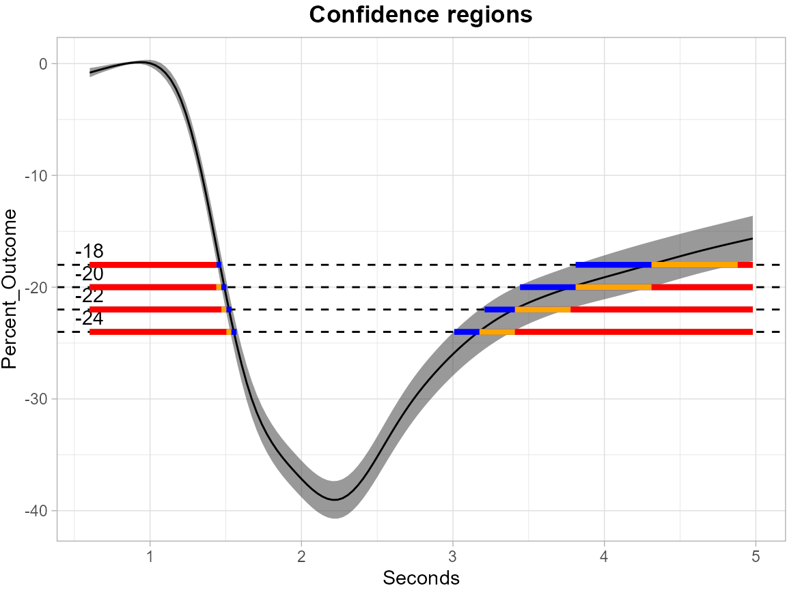

Functional_Data_Example
Angela Yu
2025-07-28
Functional_Data_Example.RmdThe first example here is to use ccds functional data to construct the inverse confidence sets (CS) from simultaneous confidence bands (SCB) using Function-on-Scalar Regression (FoSR).
The ccds dataset contains repeated measures of percent change over
time for multiple subjects under two user categories (use: 1 and no use:
0). It includes both user and non-user groups, time points, and metadata
related to eye side and frame timing. cleaning process make sure that
the data only includes measurements taken from the right eye at the
post-intervention timepoint (tp == "post").
Before calculating the SCBs, we first process ccds data by fitting a
mean GAM model, extracting residuals and performing FPCA using
SCoRES::prepare_ccds_fpca(), the function will return an
enhanced dataset includes the FPCA-derived basis scores (Phi1, Phi2,
Phi3, Phi4) for Function-on-Scalar Regression (FoSR) analysis.
Following the FPCA-based data augmentation, we fit a FoSR model using
mgcv::bam(), which allows efficient estimation of
Generalized Additive Mixed Models (GAMMs). The model formula is designed
to capture both population-level smooth trends and subject-specific
functional variation.
The response here is percent_change. Time variable t is seconds. And the covariate is use, which is a binary variable (1:use, 0:no use).
The function-on-scalar regression model is
ccds_fpca <- SCoRES::prepare_ccds_fpca(ccds)
fosr_mod <- mgcv::bam(percent_change ~ s(seconds, k=30, bs="cr") +
s(seconds, by = use, k=30, bs = "cr") +
s(subject, by = Phi1, bs="re") +
s(subject, by = Phi2, bs="re") +
s(subject, by = Phi3, bs="re") +
s(subject, by = Phi4, bs="re"),
method = "fREML", data = ccds_fpca, discrete = TRUE)After obtaining the FoSR object fosr_mod, simultaneous
confidence bands (SCB) can be constructed though
SCoRES::SCB_functional_outcome using pre-specified methods.
The SCoRES package provides two options for calculating simultaneous
confidence bands (SCBs), specified via the method argument:
cma: Correlation and Multiplicity Adjusted (CMA) confidence
bands via parametric approach. multiplier: Dense confidence
bands via Multiplier-t Bootstrap method. Use groups to
specify the names of grouping variables to analyze. The input data
should have numerical binary 0/1 values for all scalar group variables.
Here, we analyze the user group by specifying
groups = "use". Use fitted to specify the
object for SCB estimation. If fitted = TRUE,
SCoRES::SCB_functional_outcome will construct the SCB for
the fitted mean outcome function. If fitted = FALSE,
SCoRES::SCB_functional_outcome will construct the SCB for
the fitted parameter function. Use est_mean to specify the point
estimate used for constructing SCBs in SCoRES::SCB_functional_outcome.
This argument is for multiplier If est_mean =
TRUE, the multiplier bootstrap will be performed based on
the fitted mean outcome function. If est_mean = FALSE, the
multiplier bootstrap will be performed based on the sample mean. For
multiplier option, users need to provide a functional
regression object through argument object. If object =
NULL, the function will only output the SCB for an overall
mean outcome function regardless of the group specified.
Here, we estimated SCBs using both options separately for the mean outcome Y(t) of user’s group: where:
- is a functional outcome (percent_change)
- is a scalar covariate (use)
# CMA approach
results_ccds_cma <- SCoRES::SCB_functional_outcome(data = ccds,
object = fosr_mod,
method = "cma",
fitted = TRUE,
est_mean = TRUE,
alpha = 0.05,
outcome = "percent_change",
time = "seconds",
group_name = "use",
group_value = 1,
subject = "subject")
#CMA approach for parameter function
results_ccds_cma_para <- SCoRES::SCB_functional_outcome(data = ccds,
object = fosr_mod,
method = "cma",
fitted = FALSE,
est_mean = TRUE,
alpha = 0.05,
outcome = "percent_change",
time = "seconds",
group_name = "use",
group_value = 1,
subject = "subject")
# Multiplier-t Bootstrap
results_ccds_multiplier <- SCoRES::SCB_functional_outcome(data = ccds,
object = fosr_mod,
method = "multiplier",
fitted = TRUE,
est_mean = TRUE,
alpha = 0.05,
outcome = "percent_change",
time = "seconds",
group_name = "use",
group_value = 1,
subject = "subject")
results_ccds_multiplier_para <- SCoRES::SCB_functional_outcome(
data = ccds,
object = fosr_mod,
method = "multiplier",
fitted = FALSE,
est_mean = TRUE,
alpha = 0.05,
outcome = "percent_change",
time = "seconds",
group_name = "use",
group_value = 1,
subject = "subject")
# Multiplier-t Bootstrap (use sample mean)
results_ccds_multiplier_sample <- SCoRES::SCB_functional_outcome(
data = ccds,
object = fosr_mod,
method = "multiplier",
fitted = TRUE,
est_mean = FALSE,
alpha = 0.05,
outcome = "percent_change",
time = "seconds",
group_name = "use",
group_value = 1,
subject = "subject")
results_ccds_multiplier_overall <- SCoRES::SCB_functional_outcome(
data = ccds,
method = "multiplier",
fitted = TRUE,
est_mean = FALSE,
alpha = 0.05,
outcome = "percent_change",
time = "seconds",
group_name = "use",
group_value = 1,
subject = "subject")
#> [1] "No Functional Regression Object provided, will only compute an overall SCB for the outcome regardless of the group specified."In the multiplier bootstrap procedure, SCoRES supports
three types of multiplier distributions, which is specified by
weights:
-
"rademacher": with equal probability -
"gaussian": -
"mammen": A two-point distribution with mean zero and variance one (see Mammen, 1993)
Default is rademacher.
Two options are available for estimating the standard error
,
which is specified by method_SD:
“regular” (empirical standard error based on residuals):
“t” (bootstrap second moment-based estimator):
Default is t.
For mathematical details, see vignette Methods.
The code below visualizes the inverse confidence sets
(CSs) derived from SCB results using the
SCoRES::plot_cs() function. The results object
is first converted to a tibble for easier manipulation.
The levels = c(-7, -8, -9, -10) argument specifies a set
of thresholds, and SCoRES::plot_cs() function estimates
multiple inverse upper excursion sets corresponding to these thresholds,
and plot the estimated inverse set, the inner confidence set, and the
outer confidence set.
results_ccds_cma <- tibble::as_tibble(results_ccds_cma)
plot_cs(results_ccds_cma,
levels = c(-7, -8, -9, -10),
x = results_ccds_cma$time,
mu_hat = results_ccds_cma$yhat,
xlab = "Seconds",
ylab = "Percent_Outcome",
level_label = T,
min.size = 40,
palette = "Spectral",
color_level_label = "black")The plot demonstrate how to use SCB to find regions of s where the estimated mean is greater than or equal to the four levels -7, -8, -9, -10 for ccds data. The gray shaded area is the 95% SCB, the solid black line is the estimated mean. The red horizontal line shows the inner confidence sets (where the lower SCB is greater than the corresponding level) that are contained in the estimated inverse set represented by the union of the yellow and red horizontal line (where the estimated mean is greater than the corresponding levels); the outer confidence sets are the union of the blue, yellow and red line (where the upper SCB is greater than the corresponding levels) and contain both the estimated inverse sets and the inner confidence sets.
The next plot shows the SCB for the coefficient funtion for the use group.
results_ccds_cma_para <- tibble::as_tibble(results_ccds_cma_para)
plot_cs(results_ccds_cma_para,
levels = c(1.5, 2, 2.5, 3),
x = results_ccds_cma_para$time,
mu_hat = results_ccds_cma_para$yhat,
xlab = "Seconds",
ylab = "Percent_Outcome",
level_label = T,
min.size = 40,
palette = "Spectral",
color_level_label = "black")The following plots show the results of multiplier bootstrap. The
only difference between these two plots is that, the solid black line in
the first one represents the estimated mean fitted through functional
regresson object, while the second represents the sample mean. All
possible NA’s are imputed using refund::fpca.face().
results_ccds_multiplier <- tibble::as_tibble(results_ccds_multiplier)
plot_cs(results_ccds_multiplier,
levels = c(-7, -8, -9, -10),
x = results_ccds_multiplier$time,
mu_hat = results_ccds_multiplier$yhat,
xlab = "Seconds",
ylab = "Percent_Outcome",
level_label = T,
min.size = 40,
palette = "Spectral",
color_level_label = "black")
results_ccds_multiplier_para <- tibble::as_tibble(results_ccds_multiplier_para)
plot_cs(results_ccds_multiplier_para,
levels = c(1.5, 2, 2.5, 3),
x = results_ccds_multiplier_para$time,
mu_hat = results_ccds_multiplier_para$yhat,
xlab = "Seconds",
ylab = "Percent_Outcome",
level_label = T,
min.size = 40,
palette = "Spectral",
color_level_label = "black")
results_ccds_multiplier_sample <- tibble::as_tibble(results_ccds_multiplier_sample)
plot_cs(results_ccds_multiplier_sample,
levels = c(-7, -8, -9, -10),
x = results_ccds_multiplier_sample$time,
mu_hat = results_ccds_multiplier_sample$yhat,
xlab = "Seconds",
ylab = "Percent_Outcome",
level_label = T,
min.size = 40,
palette = "Spectral",
color_level_label = "black")
results_ccds_multiplier_overall <- tibble::as_tibble(results_ccds_multiplier_overall)
plot_cs(results_ccds_multiplier_overall,
levels = c(-7, -8, -9, -10),
x = results_ccds_multiplier_overall$time,
mu_hat = results_ccds_multiplier_overall$yhat,
xlab = "Seconds",
ylab = "Percent_Outcome",
level_label = T,
min.size = 40,
palette = "Spectral",
color_level_label = "black")To further illustrate the power of
SCoRES::SCB_functional_outcome for constructing SCBs for
multiple group variables, we load the pupil data and perform the
analysis introduced before.
data(pupil)
library(dplyr)
# filter all NA subjects
pupil_fpca <- SCoRES::prepare_pupil_fpca(pupil)
fosr_mod <- mgcv::bam(percent_change ~ s(seconds, k=30, bs="cr") +
s(seconds, by = use, k=30, bs = "cr") +
s(seconds, by = age, k = 30, bs = "cr") +
s(seconds, by = gender, k=30, bs = "cr") +
s(id, by = Phi1, bs="re") +
s(id, by = Phi2, bs="re") +
s(id, by = Phi3, bs="re") +
s(id, by = Phi4, bs="re"),
method = "fREML", data = pupil_fpca, discrete = TRUE)Here, we analyze the 40-years-old male user group by specifying
group_name = c("use", "age", "gender") and
group_value = c(1, 40, 0). We set
fitted = TRUE and est_mean= TRUE.
The SCBs are estimated using both options separately for the mean outcome Y(t) of the specified group: where:
- is a functional outcome (percent_change)
- is a scalar covariate (use)
- is a continuous covariate (age)
- is a scalar covariate (gender)
# CMA approach
results_pupil_cma <- SCoRES::SCB_functional_outcome(data = pupil,
object = fosr_mod,
method = "cma",
fitted = TRUE,
est_mean = TRUE,
alpha = 0.05,
outcome = "percent_change",
time = "seconds",
group_name = c("use", "age", "gender"),
group_value = c(1, 40, 0),
subject = "id")
# Multiplier-t Bootstrap
results_pupil_multiplier <- SCoRES::SCB_functional_outcome(
data = pupil,
object = fosr_mod,
fitted = TRUE,
method = "multiplier",
est_mean = TRUE,
alpha = 0.05,
outcome = "percent_change",
time = "seconds",
group_name = c("use", "age", "gender"),
group_value = c(1, 40, 0),
subject = "id")The following plots show the SCBs and inverse SCBs for the mean outcome function. The first one is from CMA approach and the second is from multiplier bootstrap.
results_pupil_cma <- tibble::as_tibble(results_pupil_cma)
plot_cs(results_pupil_cma,
levels = c(-18, -20, -22, -24),
x = results_pupil_cma$time,
mu_hat = results_pupil_cma$yhat,
xlab = "Seconds",
ylab = "Percent_Outcome",
level_label = T,
min.size = 40,
palette = "Spectral",
color_level_label = "black")
results_pupil_multiplier <- tibble::as_tibble(results_pupil_multiplier)
plot_cs(results_pupil_multiplier,
levels = c(-18, -20, -22, -24),
x = results_pupil_multiplier$time,
mu_hat = results_pupil_multiplier$yhat,
xlab = "Seconds",
ylab = "Percent_Outcome",
level_label = T,
min.size = 40,
palette = "Spectral",
color_level_label = "black")